Pornprapa Mahuttanawirioj
About
Career Objective
Education
Activities
Skills
Activities
2020-Present : was a volunteer teacher at grade 6-8 in
the Sunday Buddhist Study Center, Wat Anongkharam
Part I กิจกรรม ระบายสีจากต้นไม้ เป็นกิจกรรมที่ให้น้อง ๆ ได้ เก็บใบไม้ที่สนใจ จากนั้น ทาสีโปสเตอร์ และลอกรายจากใบไม้ สร้างสรรค์ผลงานตามจินตนาการ และในขั้นสุดท้ายจะเป็นการให้หลักธรรมโดยพระอาจารย์ แอบกระซิบว่า หลังบ้าน ครูจิตอาสาและพระอาจารย์ทายนิสัยจากใบไม้และสีที่น้อง ๆ ใช้ด้วย
Part I
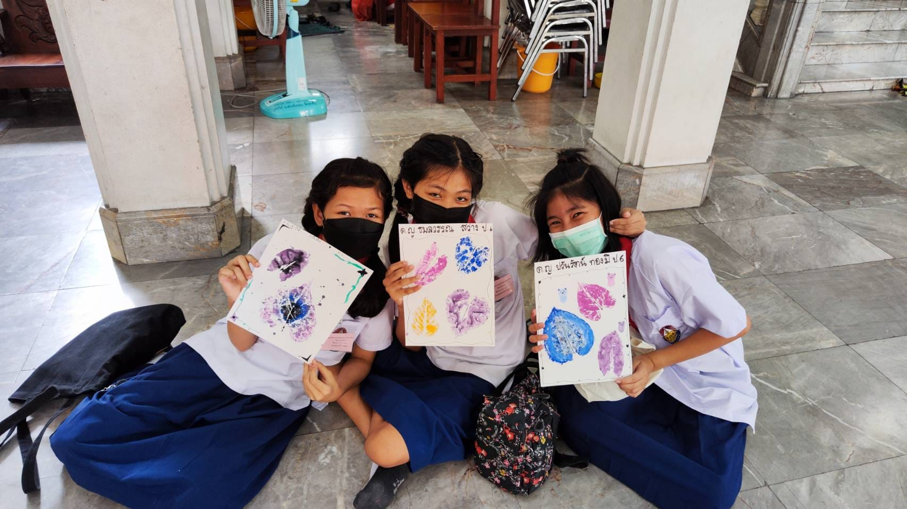
Painting with Trees
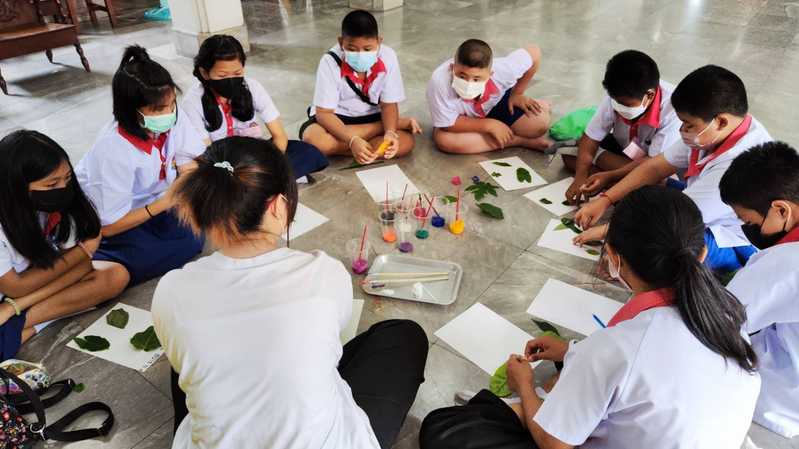
Painting with Trees
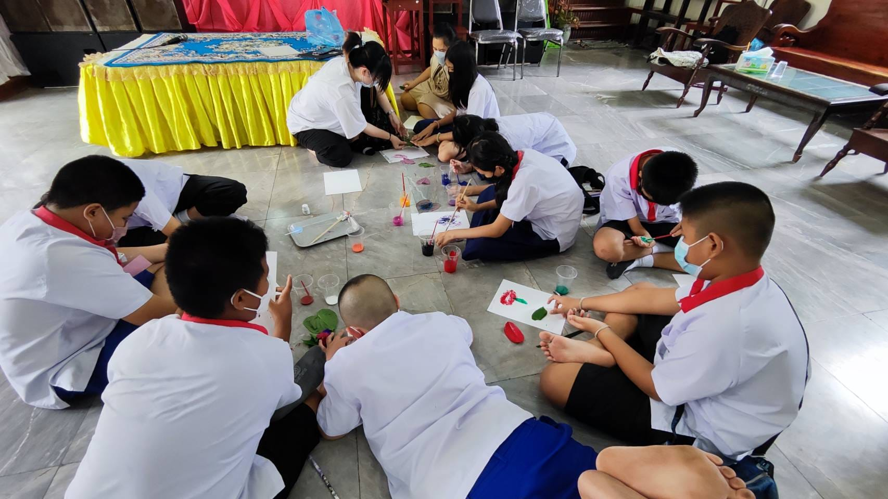
Painting with Trees
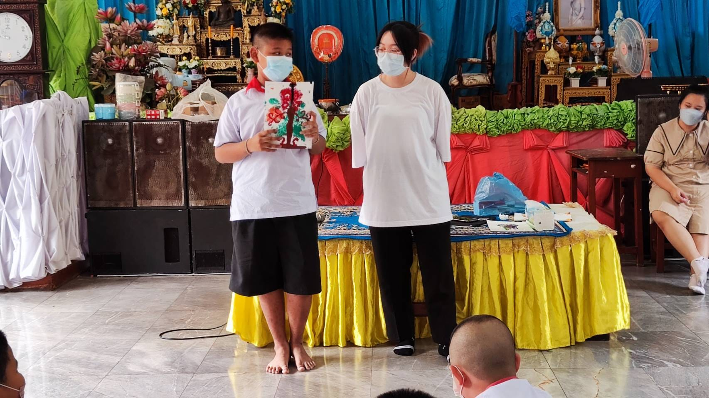
Painting with Trees
Part II กิจกรรมทำข้าวมธุปายาส เป็นกิจกรรมซิกเนเจอร์ของทางศูนย์เลยก็ว่าได้ เพราะเป็นกิจกรรมที่นำเอา อาหารจากในพุทธประวัติมาให้น้อง ๆ ได้ลองลงมือทำจริง ๆ กิจกรรมนี้ เรียนรู้เกี่ยวกับความสำคัญของข้าวมธุปายาส ที่พระนางสุชาดา นำมาถวายพระพุทธเจ้าบำเพ็ญเพียร ก่อนที่จะบรรลุเป็นพระพุทธเจ้า
Part II
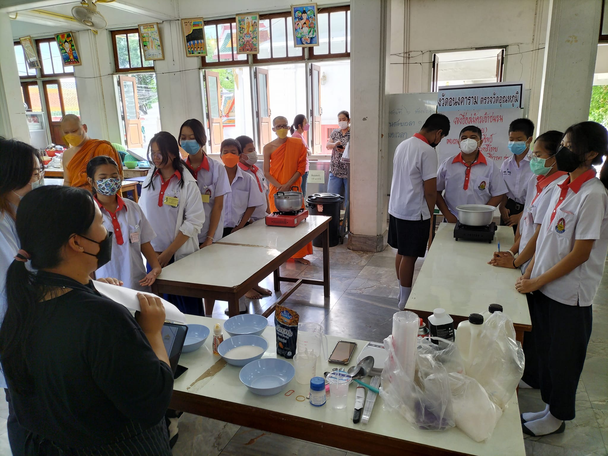
Rice Porridge
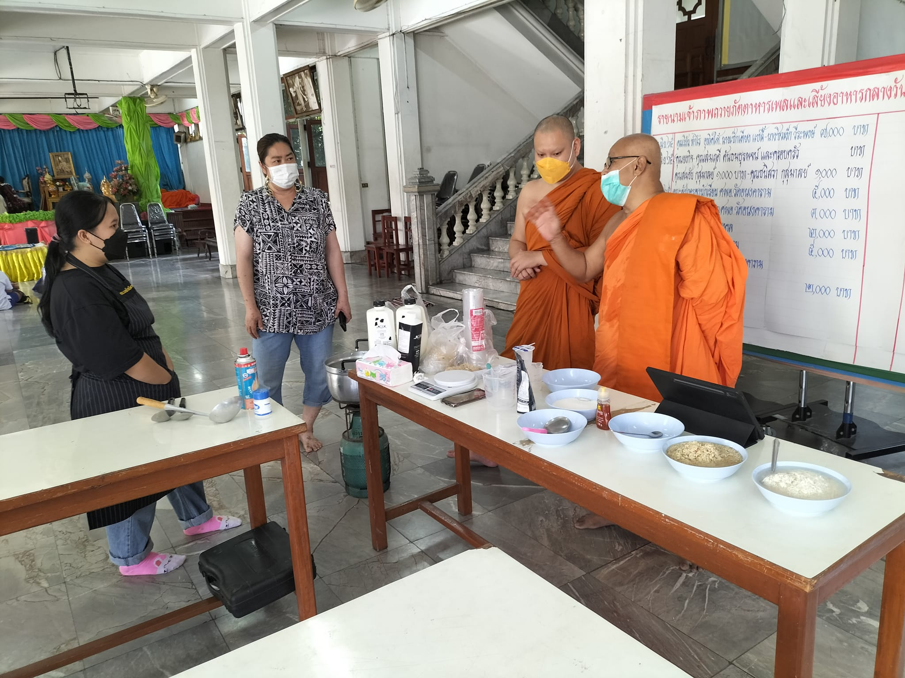
Rice Porridge
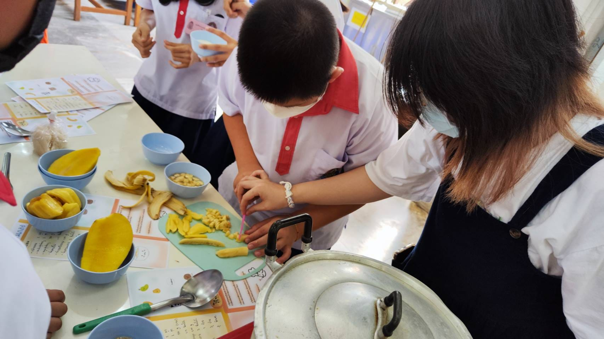
Rice Porridge
Part III กิจกรรม โอริกามิ เป็นการพับกระดาษเป็นรูปต่าง ๆ ของญี่ปุ่น ในกิจกรรมนี้ ตรงกับวันแม่พอดี จึงให้ลองทำพวงมาลัยวันแม่ เป็นการเรียนรู้เกี่ยวกับความอดทนและการระงับความโกรธ
Part III
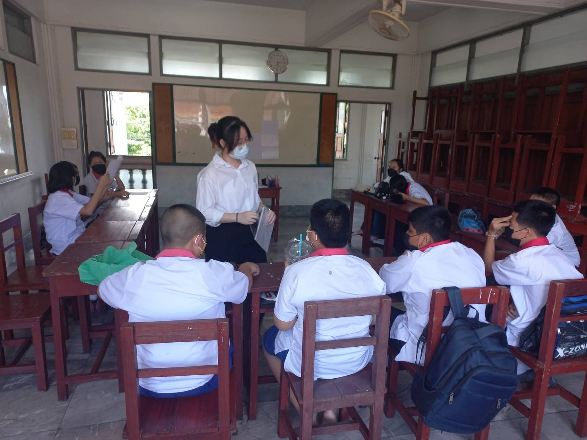
Origami Part I
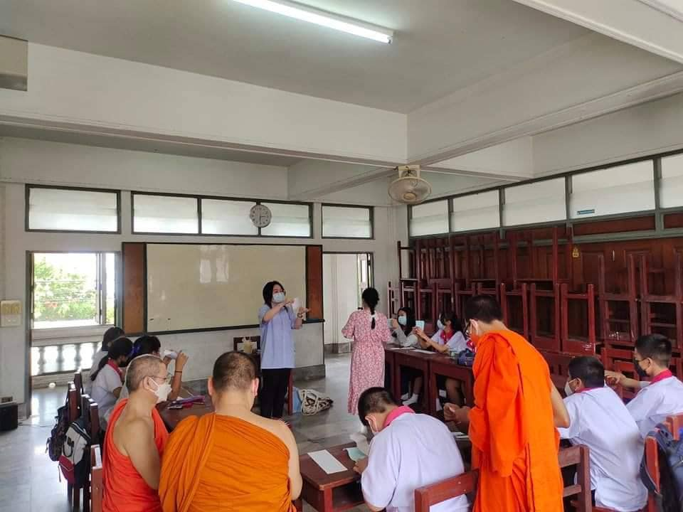
Origami Part II
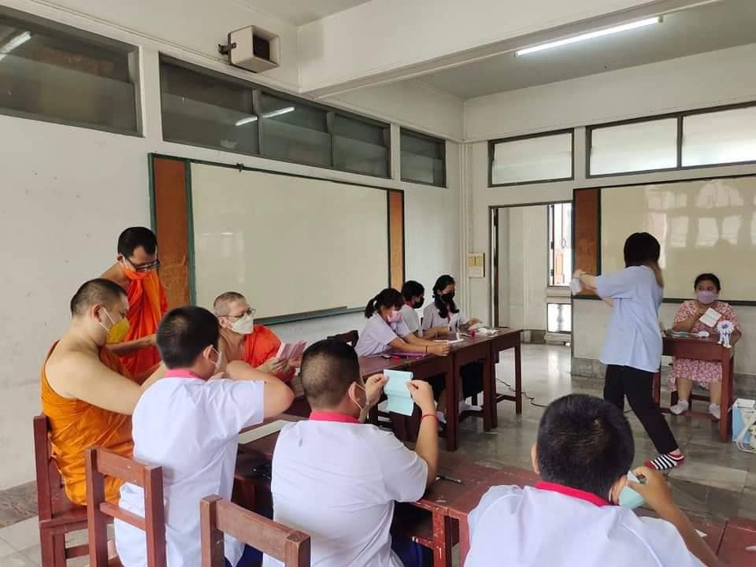
Origami Part II
Part IV เป็นภาพการทำกิจกรรมอื่น ๆ ทั้งการประชุมหารือเกี่ยวกับการทำบทเรียนใหม่ ๆ กิจกรรมวันเด็ก ปีใหม่ และกีฬาสี เป็นกิจกรรมที่สนุกมาก ๆ และของขวัญจากผู้ใหญ่ใจดีเยอะมาก (คุณครูอยากได้เองเลยบางชิ้น ฮ่า ๆ ) และในระดับชั้น ป.4 - ม.3 ในปีการศึกษานี้ ได้พาไปทัศนศึกษที่ วัดอรุณราชวราราม วัดหงส์รัตนารามและวัดสระน้ำมนต์ เป็นการเรียนรู้นอกสนามที่ ในหัวข้อ กษัตริย์แห่งธนบุรี สมเด็จพระเจ้าตากสินมหาราช
Part IV
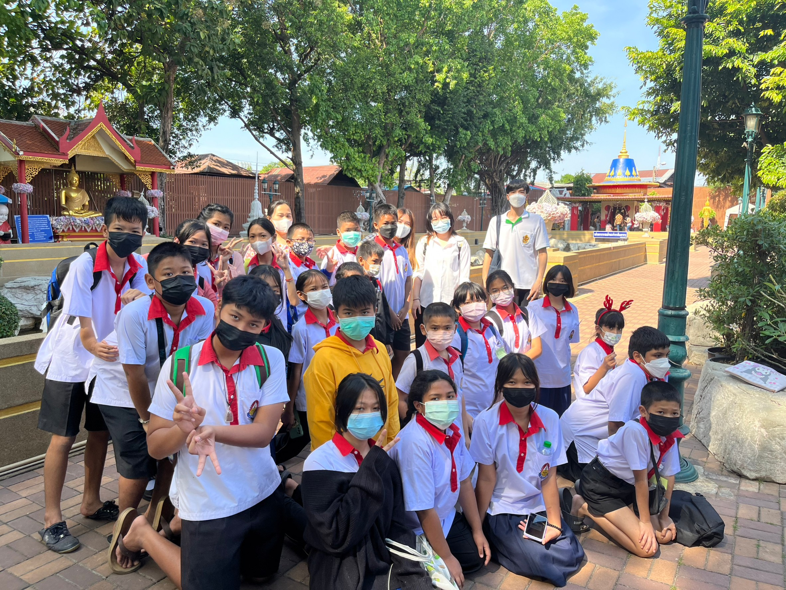
School Trip
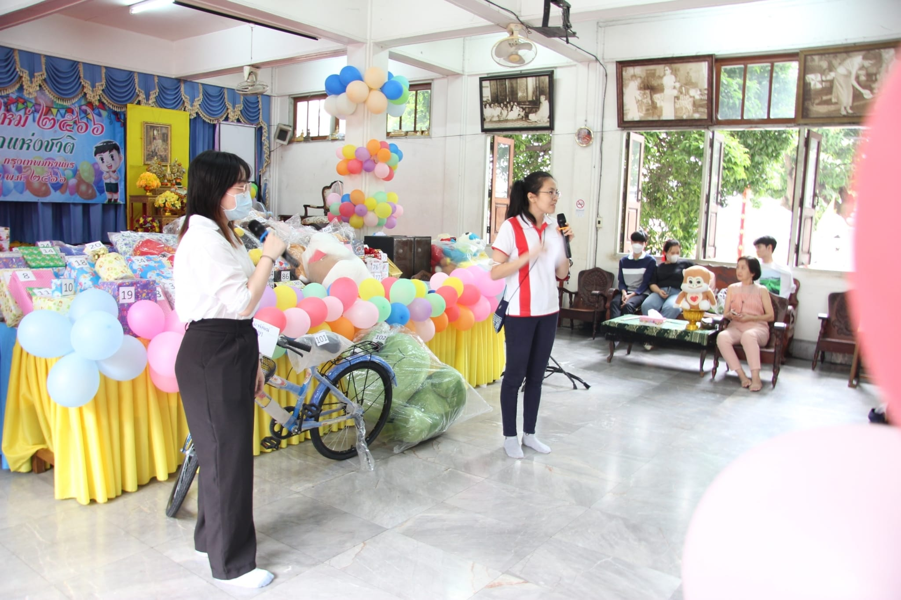
New Years and National Children's Day
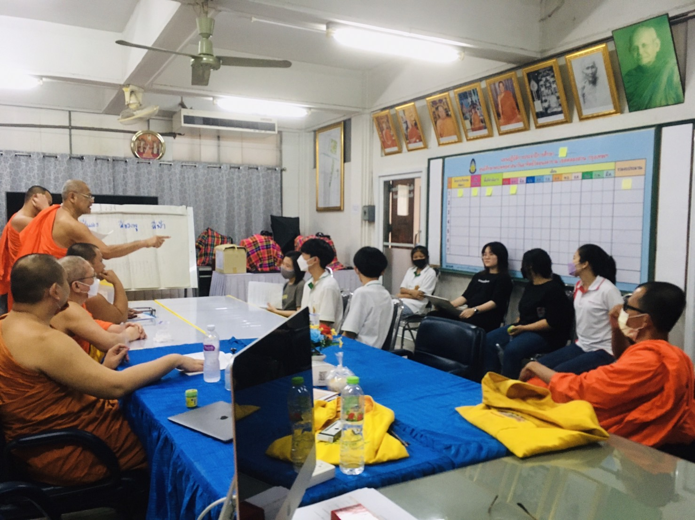
Meeting

{kind=link}
{kind=link}
{kind=link}
{kind=link}
{kind=link}
{kind=link}
{kind=link}
{kind=link}
{kind=link}
{kind=link}
{kind=link}
{kind=link}
{kind=link}